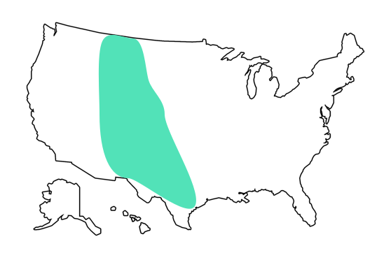
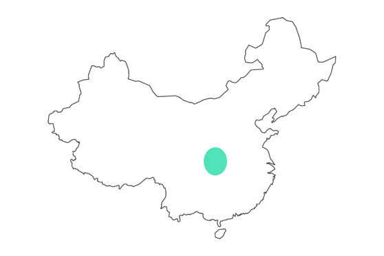

Area Lived
North America
T. Rex fossils have been discovered on two continents, primarily on the Americas and Asia. The most common place for them to live was in the area considered Texas, Utah, Montana, Wyoming, including some areas of Canada.
Asia
T. Rex fossils have been discovered on two continents, primarily on the Americas and Asia. The most common place for them to live was in the area considered Texas, Utah, Montana, Wyoming, including some areas of Canada.
